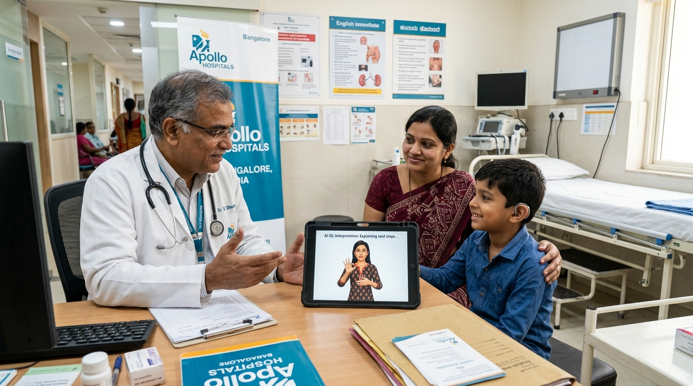

← All Solutions
🏥 Hospitals & Clinics
ISL Accessibility for Hospitals & Clinics
Help deaf children and patients communicate freely with doctors — symptoms, diagnosis, and care in real-time Indian Sign Language with zero delay.

Clinical ISL Consultation · AI Powered
How It Works in Hospitals
STEP 01
Patient Communicates
- Child types symptoms on tablet
- Parent speaks in any language
- Avatar translates to ISL immediately
STEP 02
Doctor Responds
- Doctor speaks diagnosis in Hindi/English
- ISL avatar signs the explanation
- Questions answered bidirectionally
STEP 03
Clear Communication
- Patient understands treatment plan
- Discharge instructions in ISL
- Follow-up reminders signed
Features
✓
Symptom intake in ISL
Deaf patients describe symptoms without an interpreter present.
✓
Emergency communication
Fast-access emergency phrases pre-loaded for rapid response.
✓
Tablet kiosk mode
Dedicated tablet at reception or bedside - no app install needed.
✓
Privacy-first
No patient data stored. Session-only translation, HIPAA-friendly.
✓
24/7 availability
Always on - no interpreter scheduling, no delays in emergencies.
✓
All Indian languages
Doctor and patient can each use their preferred language.
★★★★★
"The real-time translation is extraordinary. We integrated it into our hospital in under one week with zero disruption to our workflow."
Dr. Ananya Rao
Pediatrician, Bangalore